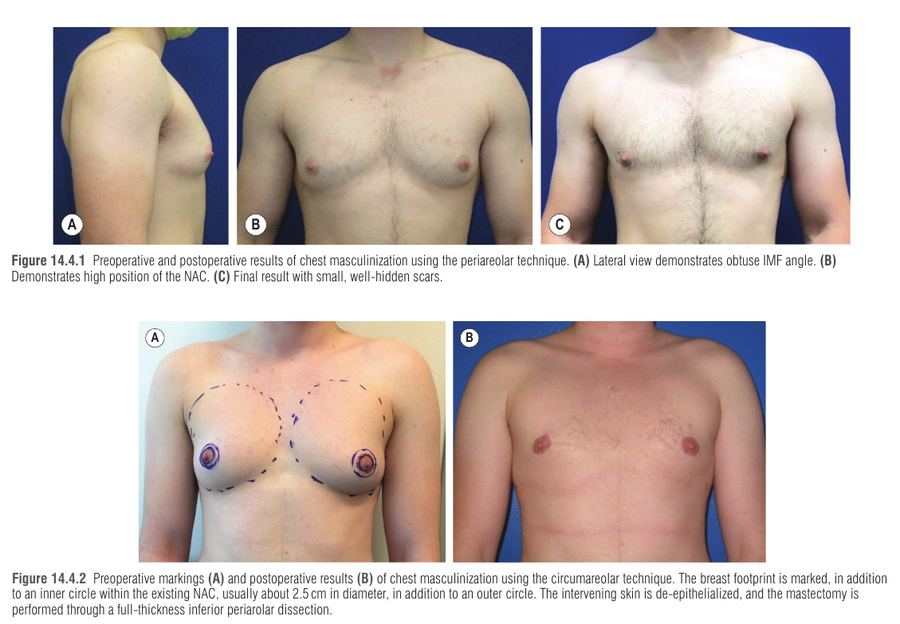
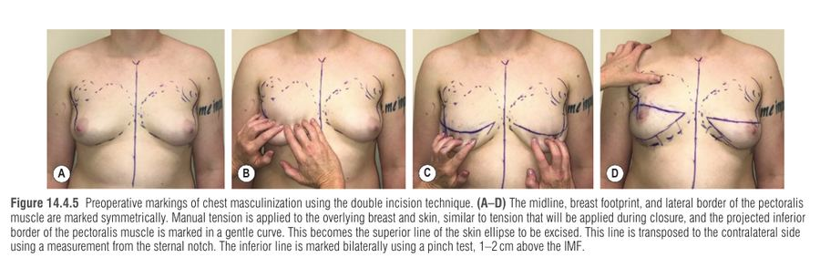
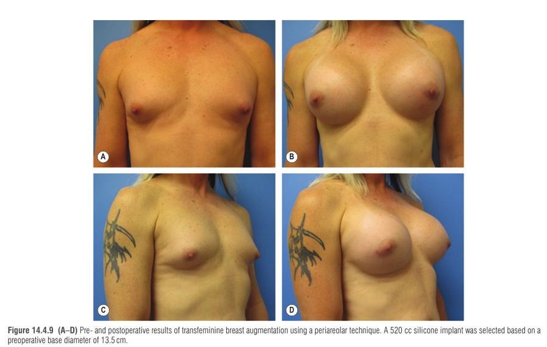
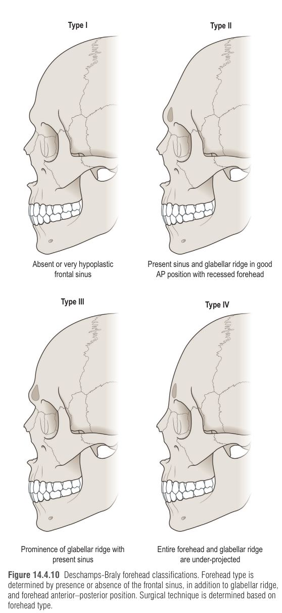
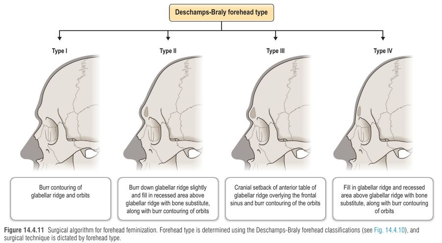

הפרק עוסק בניתוחי אישוש מגדר שאינם גניטליים: מסקוליניזציה של החזה (top surgery) לגברים טרנסים, הגדלת שד לנשים טרנסיות, והפמינזציה של הפנים (FFS – facial feminization surgery). ההבנה המרכזית: בכל אחד מהם הניתוח "מתרגם" הבדלים אנטומיים בין השלד והרקמה הרכה הגבריים והנשיים למהלך ניתוחי, ובחירת הטכניקה נקבעת על פי האנטומיה והעדפות המטופל ולא "טכניקה אחת לכולם".
דיספוריה מגדרית (gender dysphoria) = מצוקה משמעותית מאי-התאמה בין המין שהוגדר בלידה לזהות המגדרית. ניתוח החזה הוא הניתוח השכיח ביותר בגברים טרנסים (transmasculine). רבים מהם עוטפים את החזה (binding) מדי יום ← פריחות, אקנה וקשיי נשימה ← ניתוח משפר איכות חיים, דימוי גוף ומפחית דיספוריה.
לפי WPATH Standards of Care, הקריטריונים לניתוחי חזה/שד: (I) דיספוריה מגדרית מתמשכת ומתועדת; (II) יכולת לקבל החלטה מושכלת ולתת הסכמה; (III) גיל הבגרות (קיים מסלול נפרד למתבגרים); (IV) מחלות רפואיות/נפשיות בשליטה. טיפול הורמונלי אינו תנאי מוקדם, אך מומלץ לשפר תוצאה (טסטוסטרון: היפרטרופיה של הפקטורליס ואטרופיה של רקמת שד; אסטרוגן: גדילת שד לפני הגדלה). WPATH לא מספק הנחיות ל-FFS, אך נהוג ליישם קריטריונים דומים.
| נושא | המלצה | הנימוק |
|---|---|---|
| סקר סרטן שד לפני כריתה | ממוגרפיה מגיל 45 (או 40 לפי רצון המטופל) או אם יש גיל/היסטוריה משפחתית/ממצא בבדיקה; שליחת כל רקמת השד לפתולוגיה | נמצאו סרטן ופגיעות בסיכון גבוה בדגימות כריתה, בעיקר מעל גיל 40 |
| מעקב אחרי הכריתה | בדיקה קלינית קבועה של דופן החזה, העור והצלקות; US או MRI כחלופות | ממוגרפיה לרוב לא ישימה על חזה שטוח; נשארת רקמת שד (יותר בטכניקות periareolar/circumareolar/inferior pedicle) |
| עישון / ניקוטין | הפסקה 4 שבועות לפני ו-4 שבועות אחרי הניתוח | פגיעה בריפוי פצע |
| טסטוסטרון (טרנסמסקולין) | בדיקת hematocrit (פוליציתמיה); אין עדות ברורה להפסקה שגרתית | טסטוסטרון מעלה hematocrit; סקירה שיטתית לא מצאה עלייה ב-VTE או בסיבוכים |
| אסטרוגן (טרנספמינין) | הפסקה 2 שבועות לפני וחידוש 2–4 שבועות אחרי (שנוי במחלוקת) | סיכון מוגבר ל-VTE |
| BMI | עידוד ירידה במשקל | הספרות אינה קושרת BMI לסיבוכים גדולים |
מטרות הניתוח: קווי מתאר חזה חלקים וגבריים, הסתרת צלקות לאורך קווים אנטומיים, ויצירת קומפלקס פטמה-אריאולה (NAC – nipple-areolar complex) גברי. הבחירה נקבעת בעיקר לפי שני משתנים: (1) רפיון העור (עודף מעטפת עור) ו-(2) גובה הפטמה – כשגודל השד תורם משני.
רפיון עור נמדד לפי זווית ה-IMF (inframammary fold) בין הקוטב התחתון של השד לדופן החזה: זווית קהה = רפיון מזערי; 90° = בינוני; זווית חדה = רפיון משמעותי.
פטמה גבוהה = השפה העליונה של האריאולה מעל השפה התחתונה של הפקטורליס כשהשד מתוח כלפי מטה.
העיקרון: ככל שיש יותר עור עודף (או פטמה נמוכה), צריך חתך ארוך יותר כדי לשטח את החזה ← מחיר: צלקות ארוכות ואובדן תחושה בפטמה.
איור סכמטי: אלגוריתם בחירת טכניקה (על בסיס אלגוריתם Monstrey 2008 ב-Neligan, שהורחב עם גובה הפטמה). חיצים מימין לשמאל = רפיון עור עולה.
| טכניקה | מתאים ל... | יתרונות | חסרונות |
|---|---|---|---|
| Periareolar | רפיון מזערי, NAC קטן וגבוה, עור איכותי שיתכווץ | צלקת קטנה מוסתרת, שימור תחושת NAC | רק מיעוט מועמדים; המטומה 10–15%; ריוויזיות רבות |
| Circumareolar / Extended | פטמה גבוהה, רפיון קטן-בינוני (דגם: lateral dart, inferior wedge) | NAC על פדיקל דרמלי ← מיטוב הקרנה ואפשרות לשימור תחושה; הקטנת אריאולה | צלקות נוספות; המטומה 10–15%; ריוויזיות |
| Double incision + FNG | שד גדול, רפיון בינוני-משמעותי, NAC נמוך, איכות עור גרועה | הבקרה הטובה ביותר על קווי מתאר חלקים, גודל ומיקום NAC | צלקות ארוכות, אובדן תחושת NAC, גרפט (קליטה) |
| Inferior pedicle | מטופלים מלאים יותר שמוכנים להתפשר | תחושת NAC אפשרית, מראה טבעי ללא גרפט | בליטה קבועה מהפדיקל שפוגמת בקו המתאר |


נקזים והבולסטר שבוע; הנקז מוצא כשהתפוקה <30 מ"ל ליום; וסט לחץ 2–4 שבועות (ב-periareolar עד 4–6 שבועות).
| סיבוך | שכיחות / הערה |
|---|---|
| המטומה (הסיבוך החריף השכיח ביותר) | 3–5% ב-double incision; 10–15% ב-periareolar/circumareolar – כנראה בגלל החשיפה המוגבלת |
| סרומה, זיהום | נדירים יחסית, טיפול שמרני |
| אובדן NAC חלקי/מלא | נדיר אם הפדיקל נשמר והגרפט מקבל בולסטר מתאים |
| עור עודף ו-dog-ears (ריוויזיה) | 8–40%; גבוה יותר ב-periareolar/circumareolar; לרוב מינורי בהרדמה מקומית |
שביעות הרצון גבוהה בכל הטכניקות.
כמעט מחצית מהנשים הטרנסיות מעוניינות בהגדלת שד, והיא משפרת איכות חיים ורווחה פסיכוסוציאלית.
אסטרוגן (לעיתים עם אנטי-אנדרוגן כמו spironolactone) ← גדילת שד מתחילה אחרי 3–6 חודשים, מקסימום אחרי 2 שנים ← לרוב רק Tanner II–III גם אחרי שנה ← צורך בניתוח. מומלץ 1–2 שנות אסטרוגן לפני הניתוח לשיפור התוצאה.
| נושא | פרט |
|---|---|
| סיבוכים כלליים | capsular contracture, קרע, זיהום, המטומה, אסימטריה, נדידה, BIA-ALCL |
| MRI לשתלי סיליקון (FDA) | 3 שנים אחרי ההשתלה ואחר כך כל 2 שנים |
| הזרקות סיליקון קודמות | שכיחות יותר באוכלוסייה זו; מגבירות סיכון לזיהום – לשאול |
| שיעור סיבוכים | 0.5–2.0%, המטומה השכיחה, דומה לנשים ציסג'נדר |

פותח על ידי Douglas Ousterhout בסוף שנות ה-80 (תחילה עצם הפנים העליונה); רצוי/מבוצע ב-45% מהנשים הטרנסיות. דורש צוות רב-תחומי. אין כיסוי ביטוחי מלא בכל מקום – חשוב לדון בכך מראש. הדמיה (CT/צילום) לתכנון: גודל סינוס פרונטלי, עובי עצם הפרונטלית, מידות סנטר, זווית הלסת ומהלך עצב alveolar תחתון.
| אזור | גברי | נשי |
|---|---|---|
| מצח | שטוח יותר, supraorbital bossing (סינוס פרונטלי גדול, רכס עבה) | עגול יותר, ללא bossing |
| קו שיער | צורת M עם נסיגה, 7–8 ס"מ מעל מרכז הגבה | צורת O, 5.5–5.8 ס"מ |
| גבה ואורביטה | גבה ישרה, יושבת בקצה או מתחת לשפת האורביטה | גבה מקושתת, שיא בלימבוס הצדדי, מעל שפת האורביטה; אורביטות גבוהות ועגולות |
| אמצע הפנים | מרובע יותר | עצמות זיגומה רחבות יותר, malar eminence עדינה ובולטת, מראה "לב"/משולש הפוך, כריות שומן malar מלאות |
| אף | גדול יותר, דורסום ישר/קעור פחות | קטן, דורסום קעור, זווית נזולביאלית קהה (100–105°), בסיס alar צר, הקרנת קצה גדולה |
| שפה | גובה שפה גדול יותר | פחות עור/יותר vermilion, יותר show של חותכות עליונות |
| לסת וסנטר | bigonial רחב (עצם ומסטר), סנטר רחב, גבוה ובולט | סנטר צר, קצר ופחות בולט |
| גרון | בליטת תירואיד בולטת (זווית חדה) | בליטה קטנה |
| אזור | פרוצדורה | נקודות מפתח / סיבוכים |
|---|---|---|
| קו שיער | הנמכת והתאמת קו שיער בחתך trichophytic (חתך משופע 4–5 מ"מ מאחורי הקו) | רגנרציה של שיער דרך הצלקת; הרמה subgaleal עד ה-occiput, galeotomies לפי הצורך, תפירת galea לפריוסט המצח למניעת נסיגה; לעיתים השתלת follicular units |
| מצח | סיווג Deschamps-Braly (4 סוגים; הנפוץ: Type III) | Type III: הסרת הטבלה הקדמית של הסינוס הפרונטלי באזור ה-glabella, עיצוב והזזה אחורנית (setback) עם microplates + burring של הרכס העל-אורביטלי. סיבוכים: mucocele, malunion, alopecia |
| אמצע הפנים | fat grafting; שתלי alloplastic (סיליקון/polyethylene) דרך חתך gingivobuccal; sandwich zygomatic osteotomy | מטרה: עגלגלות והבלטת malar בלי נפח עודף |
| אף | רינופלסטיה פמינית | הפחתת גבנון (דורסום קעור, זווית nasofrontal קהה), אוסטאוטומיות, tip rotation sutures, alar base reduction |
| שפה עליונה | lip lift | הקטנת גובה העור, הגדלת vermilion, חתך בבסיס האף; סיבוך שכיח: צלקת בעייתית |
| לסת וסנטר | mandibuloplasty + genioplasty דרך חתכים תוך-פומיים | burr/אוסטאוטומיה בזווית; T-osteotomy לסנטר; הגנה על עצב mental וצמרות השיניים; התלייה מחדש של mentalis וסגירת רירית אטומה למניעת דליפת רוק וזיהום חומרה. הפחתת מסטר: אטרופיה אחרי הסרת pterygomasseteric sling או botulinum toxin |
| גרון | Chondrolaryngoplasty (tracheal shave) | הפרדת strap muscles, חשיפת התירואיד. הכריתה נשארת 2 מ"מ מעל הנקודה שבה מתחברים מיתרי הקול (איתור במחט 22G ובלרינגוסקופ גמיש). סיבוכים: דימום, odynophagia, צרידות, פגיעה במיתרי קול, אי-יציבות אפיגלוטיס |
הפרק מדגיש שיפור איכות חיים ושביעות רצון גבוהה אחרי FFS; מומלצים גם פרוצדורות משלימות (blepharoplasty, facelift, fillers, botulinum) ושמירה על עקרונות אסתטיים אישיים, לא רק "פמיניזציה".


P – Periareolar: רפיון מזערי.
C – Circumareolar (+ Extended): רפיון קטן-בינוני, פטמה גבוהה.
D – Double incision + FNG: רפיון בינוני-משמעותי, פטמה נמוכה.
I – Inferior pedicle: חלופה עם בליטה.
דמייני מדרגות כשעל כל מדרגה עומד חייט. על המדרגה הנמוכה (עור מתוח) החייט רק "מציץ" מתחת לאריאולה (P). ככל שעולים והבד רפוי יותר, החייט צריך עוד חיתוכים: סביב העיגול (C), ולבסוף חותך פס שלם לרוחב החזה, תולש את הכפתורים (הפטמות) ותופר אותם מחדש במקום הנכון (D). רק החייט החלש שמשאיר את הכפתורים מחוברים בחוט ארוך משאיר בליטה (I).
2.2 ס"מ – קוטר גרפט NAC | 2 מ"מ – מרחק הכריתה מעל נקודת מיתרי הקול בחונדרולרינגופלסטיה | 2 שבועות – הפסקת אסטרוגן לפני הגדלת שד | 2 שנים – גדילת שד מקסימלית על אסטרוגן.
גבר טרנס בן 26, בטיפול בטסטוסטרון כשנתיים, עוטף את חזהו מדי יום ומתלונן על פריחה וקשיי נשימה. בבדיקה: שדיים גדולים, בצילום צד זווית IMF חדה (רפיון עור משמעותי), הפטמות מתחת לשפה התחתונה של הפקטורליס כשהשד מתוח, וגם עור באיכות בינונית. אין היסטוריה משפחתית של סרטן שד. הוא עישן עד לפני חודשיים. הוא מעוניין בחזה שטוח עם הצלקות הסמויות ככל האפשר ומוכן לאובדן תחושה.